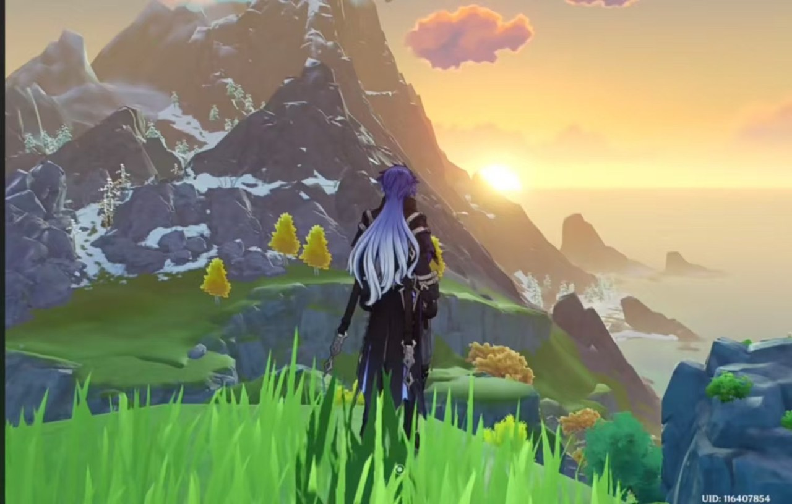
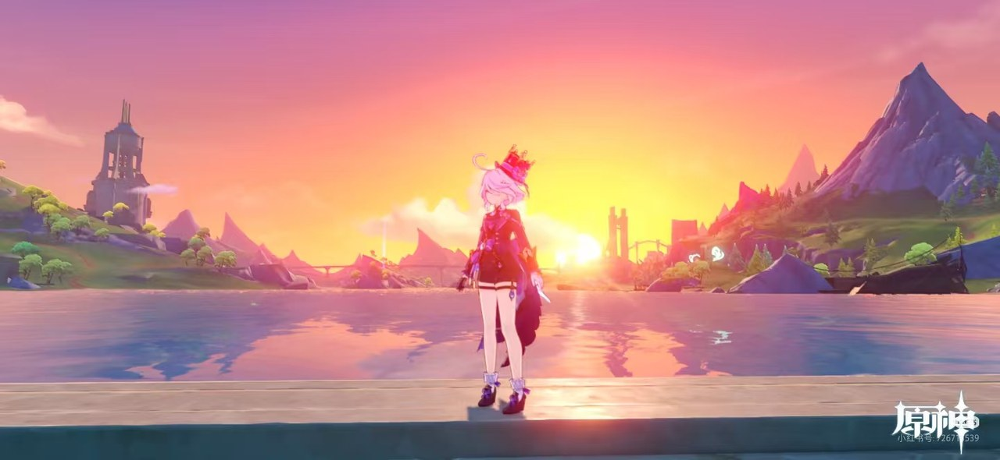
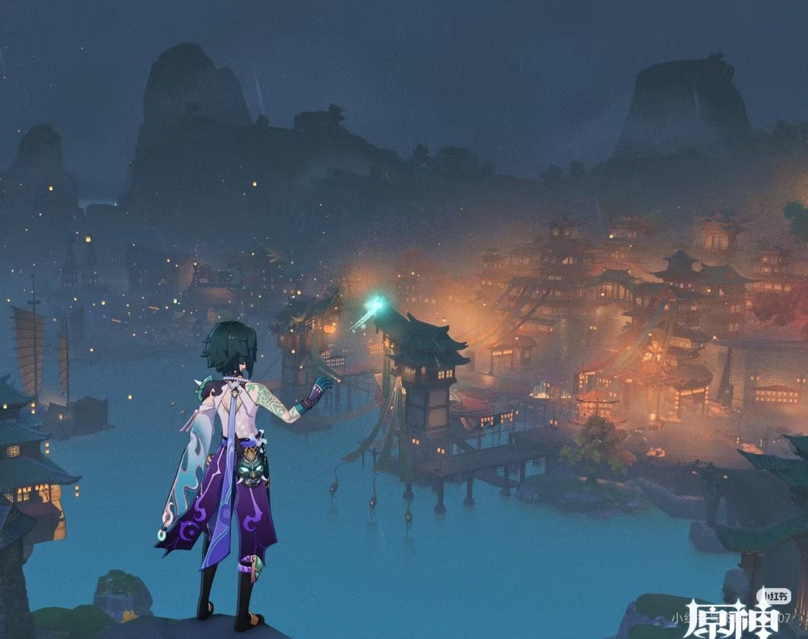
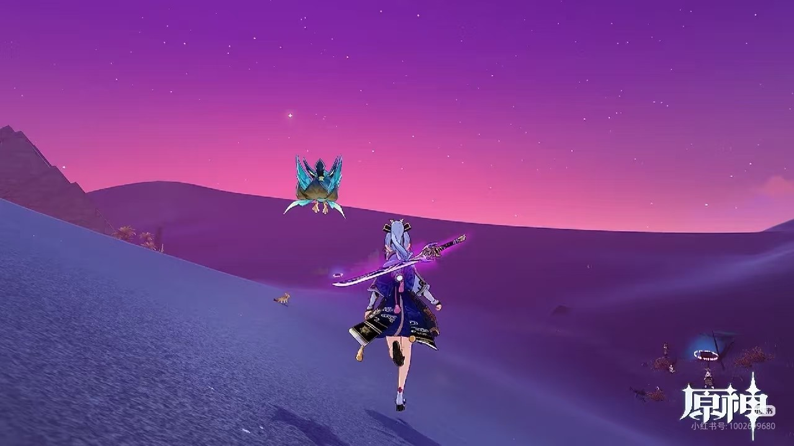
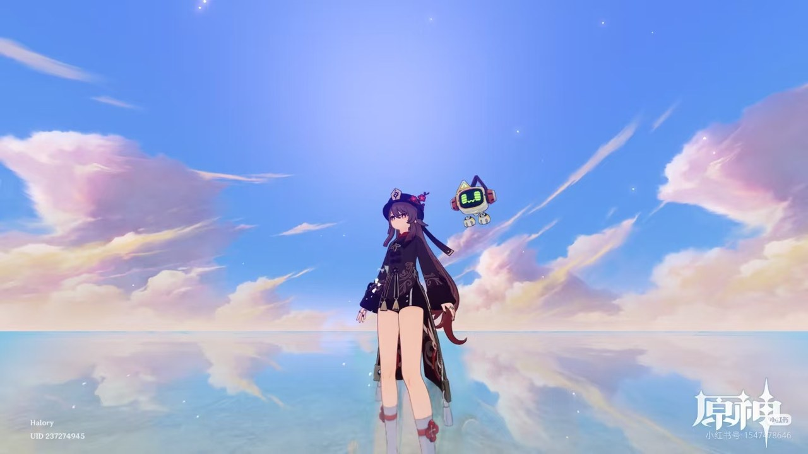

SNAPSHOTS
一条自己走过的路线
按时间顺序排的。没有刻意构图，大多是跑图途中突然停下按的快门。
把鼠标放到图上，会轻微放大一点——就像回头多看一眼。

01 · 雪山落日，海面被夕阳烧成一片金

02 · 水边黄昏，天是粉紫色的
 03 · 云海上的浮岛，像站在天边
03 · 云海上的浮岛，像站在天边

04 · 璃月港夜色，灯火全落在水里

05 · 沙漠的夜，天比沙还艳

06 · 站在水面上，天空和倒影连成一片
返回首页
下一站：冒险家协会